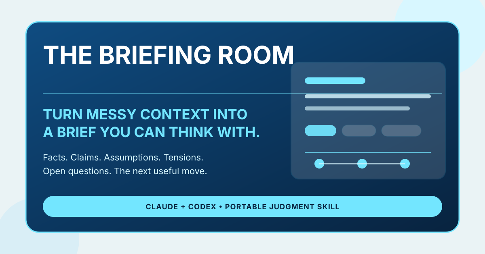
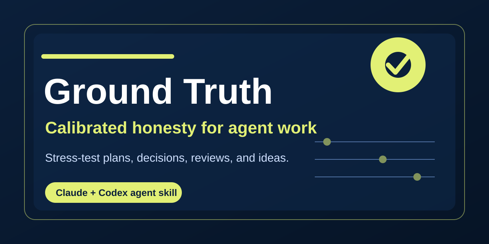
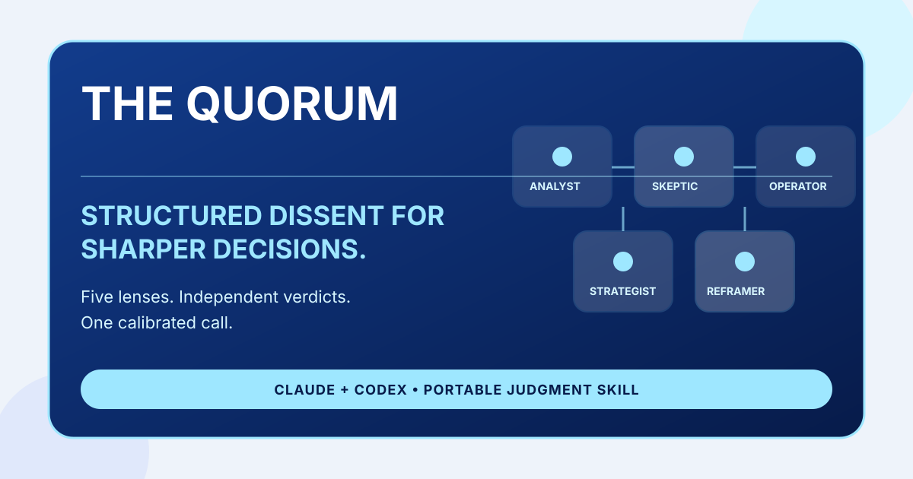
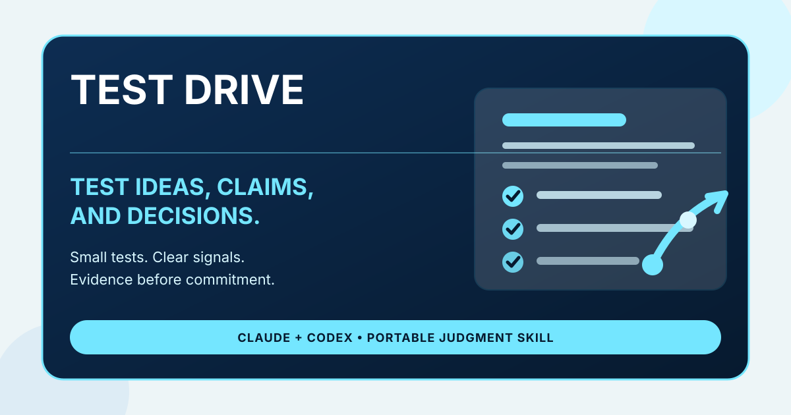

The Briefing Room
Turn scattered notes, research, transcripts, or context into a brief you can think with.
Four independent skills
Choose the skill that fits the work in front of you. Use one on its own, or combine them when a decision calls for a fuller loop.

Turn scattered notes, research, transcripts, or context into a brief you can think with.

Pressure-test a claim, plan, draft, or idea with calibrated honesty and useful critique.

Deliberate consequential decisions through multiple expert lenses, without hiding disagreement.

Find the smallest credible test that can create evidence before you commit to an idea.